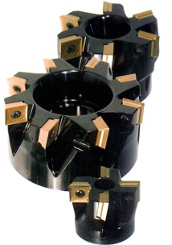

|
CNC
TEZGAHLARI ÝÇÝN TAKIM SEÇÝMÝ
CNC
tezgahlarýnýn en önemli özelliklerinden birisi çok yüksek
talaþ kaldýrma debilerine sahip olmalarýdýr. Bu tezgahlarda,
bu iþlemleri yapabilecek takýmlarýn olmasý oldukça inanýlmaz
görülmektedir. Buna bir sanayiden daha az olan ayarlama süresini
ve yaklaþýk beþ saniye süren otomatik takým deðiþtirme iþini
de eklersek, üretim mühendislerinin neden nümerik kontrollü
iþlemede en can alýcý konunun takýmlar olduðunu düþünmelerini
daha iyi anlarýz.
TAKIM
MALZEMELERÝ:
Küçük
çaplý delik delme, kýlavuz çekme, raybalama, punta deliði
ve kama kanalý açma gibi iþlemlerde yüksek-hýz çeliði (HSS)
takýmlar kullanýlmasýna raðmen, CNC ile iþlemede, genellikle
sinter karbür (Karbit) takýmlar kullanýlmaktadýr.
Bu
tezgahlarda kullanýlacak takýmlarda aranan fiziksel özelliklerin
baþýnda, 600°C'ye kadar çýkabilen metal kesme sýcaklýðýndaki
malzemenin sertliði ve tokluðu gelmektedir. Yüksek- hýz çelikleri,
sinter karbür'den daha tok olmasýna karþýn onun kadar sert
deðildir. Bu nedenle, bunlar yüksek hýzlardaki talaþ kaldýrma
tekniklerinin þartlarýný yerine getirebilecek yeni karbür
türlerinin geliþtirilmesi için yoðun araþtýrmalar yapýlmaktadýr.
Yapýlan bu araþtýrmalarýn ne kadar baþarýlý olduðunu anlayabilmek
için, CNC tezgahlarýný çalýþýrken izlemek yeterlidir.
TAKIM
KONTROLÜ:
Pahalý
olan CNC tezgahlarýnýn verimli kullanýmý, oldukça metodik
takým kullanýmý yaklaþýmýný gerektirir. Tezgahtaki orijinal
veya yedek takýmýn parça programýndaki takýma karþýlýk gelmesi
gereklidir. Bu nedenle programlamada çalýþan kiþiler arasýnda
yakýn bir iþbirliði saðlanmalýdýr.
Etkili
bir takým kontrolü, aþaðýdaki fonksiyonlarý saðlamalýdýr;
- Aþýnmýþ,
hasarlý uçlarýn deðiþtirilmesi, uygun olduðunda bileme yapýlmasýný
içeren iyileþtirme,
- Boyutlandýrma,
ön-ayarlamayý içeren hazýrlýk,
- Kullanýma
kadar stoklama,
- Taþýma,
- Tezgahta
koruma.
Bu
kavram þematik olarak aþaðýda verilmiþtir;
Takýmlarýn
bileme yöntemleriyle iyileþtirilmesi oldukça fazla dikkat
ister. Uzun süreli yüksek hýzlarda talaþ kaldýrma iþleminin
verimi, tam bir takým geometrisini gerektirir. Takým kontrol
sistemi;
- takým
deposu taþýmatezgahta/ depolama takým tezgahý taþýma takým
odasý taþýma
-
temin etme ön ayar tanýmlama bakým
Takýmlar
kullanýlmadýklarýnda, aðýr-iþ çelik raflarýnda taným kartlarýyla
birlikte depolanmalýdýr. Depolanan takýmlar özel iþ veya genel
amaçlý olabilir. Hangisi olursa olsun, bu takýmlar boyutsal
özellikleri, uygulamalarý vs. içeren bilgileri ile belirlenmelidir.
Ayný zamanda hem parça programcýsýna hem de operatöre referans
saðlayacak þekilde, mevcut takýmlarýn listesinin çýkarýlmasý
oldukça faydalýdýr. Takým listesi genellikle takým kütüphanesi
olarak adlandýrýlýr.
CNC'DE
ÝÞ YÜKLENMESÝ VE ÝÞ BAÐLAMA
Herhangi
bir iþ baðlama düzeneði aþaðýdaki þartlarý yerine getirmelidir.
- Ýþi
sýký olarak baðlamalý,
- Pozitif
yerleþtirme saðlamalý,
- Hýzlý
olmalý ve kolay kullanýlmalý,
Geleneksel
tezgahlarda denenmiþ, kullanýlmýþ bir çok iþ baðlama düzeneði
vardýr; mengene, ayna, pens bunlarýn en bilinen örnekleridir
ve bunlar nümerik kontrollü tezgahlarda da kullanýlmaktadýr.
Bu iþ baðlama düzenekleri, mekanik, hidrolik veya pnömatik
olarak çalýþabilir. Mekanik olarak çalýþanlar, iþ paçasýnýn
yüklenmesi ve sýkýlmasýnda el becerileri gerektirir. Bu nedenle,
hidrolik ve pnömatik sýkma özellikle de ikincisi tercih edilir.
Hidrolik
ve pnömatik sýkma, tezgah kontrol ünitesi tarafýndan elektronik
olarak kolaylýkla kontrol edilir ve hýzlý bir çalýþma ve düzgün
sýkma basýncý saðlar. Bu çeþit geleneksel iþ baðlama düzenekleri;dikdörtgen,
köþeli, hegzagonal gibi üniform þekilli stok malzemesi veya
iþ parçasýnýn iþlenmesinde daha uygundur.
Düzensiz
þekiller, bazen pnömatik veya hidrolik sýkýlama düzenlemeleriyle
birlikte özet tasarlanmýþ kolaylýklar ile geleneksel iþlemeye
uyarlanabilir. Genel bir uygulama olarak, iþ parçasý iþleme
sýrasýnda hareket etmeyecek þekilde pozitif olarak yerleþtirilmelidir.
Her iki durumda, iþ parçasý sabit çenelere karþý yerleþtirilmiþtir.
Herhangi bir iþleme sürecinde iþ parçasýnýn hareket olanaðý,
emniyetle ilgili nedenlerle istenmez.
Nümerik
kontrollü iþleme sürecinde de az olsa iþ parçasýnýn hareket
etmesi problemi olabilir. Bunun anlamý, iþ parçasý boyutu
iþleme sýrasýnda sürekli izlenmediðinden, iþ parçasýnýn boyutsal
hassasiyetinin kaybolmasýdýr.
PROGRAMLAMA
(Bu bölüm, 08-04-2004 tarihinde eklenmiþtir)
1
Ýþ Akýþý
CNC
tezgahý kullanarak parça iþlemek için parçanýn NC programýný
yapmak ve bu programdaki komutlara göre tezgahý çalýþtýrmak
gereklidir.
Ýþ
Akýþý:
1.
Parçanýn teknik resmi tezgah koordinatlarýna göre hazýrlanýr.
2.
Parçanýn teknik resmine göre operasyon planý yapýlýr.
3.
Operasyon planý ve resme göre parça programý yazýlýr. Program
delikli þerit, kaset veya diskete kaydedilir. Bunlarýn olmadýðý
durumda yazýlan kaðýtta kalýr.
4.
Program direk kablo baðlantýsý ya da elle tuþlayarak tezgahýn
kontrol ünitesinin hafýzasýna aktarýlýr.
5.
Ýþ parçasý ve takýmlar tezgaha baðlanýr.
6.
Ýþ parçasý ve takýmlarýn ölçümleri yapýlýr.
7.
Programdaki komutlara göre tezgah çalýþtýrýlýr ve parça iþlenir.
2
Programlarýn yapýsý
Tezgahý
çalýþtýrmak için CNC üniteye verilen komutlara PROGRAM denir.
Programda verilen komutlarýn sýrasýna göre takýmlar hareket
eder, yardýmcý fonksiyonlar çalýþýr.
Bir
iþlemi yapmak için verilen komutlar dizisine BLOK denir.
2.1
Programýn yapýsý
Yukarýda
görüldüðü gibi programlarýn baþýnda PROGRAM NUMARASI bulunmaktadýr.
Program numarasý O harfi ile birlikte 4-rakamlý bir sayýdan
meydana gelmiþtir ve programlarýn birbirlerinden ayýredilmesine
yarar.
Her
programýn sonunda ise PROGRAM SONU KOMUTU olan M30 veya M02
bulunur.
Hafýzaya
yüklenebilecek program sayýsý kullanýlan kumanda ünitesine
ve hafýzanýn kapasitesine baðlýdýr.
2.2
Blok'un yapýsý
N:
Blok (sýra) numarasý
G:
G-(hazýrlýk) fonksiyonu
X,
Z: Pozisyon komutlarý
M:
M-(yardýmcý) fonksiyonu
S:
S-(hýz) fonksiyonu
T:
T-(takým) fonksiyonu
;
: Blok sonu kadu (iþareti)
Bir
blok diðerlerinden BLOK SONU KODU (iþareti) ile ayrýlýr.Blok
sonu kodu için (E.O.B.=End of the block) " ; " iþareti
kullanýlýr. Ancak bu iþaret bazý normlarda deðiþmektedir.
2.3
Kelime ve Adres (Word & Address)
2.4
Satýr, Sýra veya Blok Numarasý (Sequence Number)
Blok
numarasý, bloklar için sadece referans numaralarýdýr. N harfi
ve 4-rakamlý bir sayýdan meydana gelmiþtir.Blok numaralarýnýn
parça iþleme sýrasý üzerinde herhangi bir etkisi yoktur. Bundan
dolayý blok numaralarý ardýþýk (düzenli), karmaþýk veya ayný
numara birkaç kez kullanýlmýþ olabilir. Hatta blok numarasý
kullanýlmayabilir. Blok numarasýnýn kullanýlmasýnýn amacý;
programda komutla istenilen bloða atlama yapýlabilmesi ve
bloðun aranabilmesidir.
NOT:
1.
Hafýzada blok numarasý aratmadan önce program numarasý kontrol
edilmelidir.
2.
Bir programda ayný blok numarasýna sahip iki ya da daha fazla
blok varsa sadece ilk önce bulunan bloðun iþlemleri yapýlýr,
daha sonraki bloklar iþlenmez.
3.
Blok numarasý olmayan bloklarda da adresler arattýrýlabilir.
2.5
Ana program - Alt program
Ayný
iþlemler bir programýn deðiþik yerlerinde aynen tekrarlanýyorsa
ALT PROGRAMLAR (SUBPROGRAM = SUBROUTINE) kullanýlýr.
Alt
programýn baþýnda ana programda olduðu gibi O harfi ve 4 rakamlý
sayýdan meydana gelmiþ bir program numarasý, sonunda ise ALT
PROGRAM SONU KOMUTU olan M99 bulunur. Ana programda iþlemler
yapýlýrken M98 P--ALT PROGRAM ÇAÐIRMA KOMUTU okununca, alt
programlarýn iþlemleri yapýlmaya baþlanýr. Alt program iþlenip
bitirilince M99 komutu ile ana programa dönülür. Ana programýn
iþlemlerine kalýndýðý yerden devam edilir.
Not:
I- M98 P- - Q - - L- -;
Komutunda
P : Alt programýn numarasý
Q
: Alt programýn blok numarasý
L
: Alt programýn tekrarlanma sayýsý
Bu
komut ile P alt program numarasý çaðrýlýr.Alt program Q numaralýbloktan
itibaren iþlenmeye baþlanýr.Alt program L defa iþlendikten
sonra ana programa dönülür.Burada P deðerine birþey yazýlmazsa,
ana programdaki alt program çaðýrma bloðundan sonra gelen
blok numarasý alt program numarasý olarak alýnýr.
Q
deðerine birþey yazýlmazsa, alt program baþýndan itibaren
iþlenir.
L
deðerine birþey yazýlmazsa, alt program bir defa iþlenir.
II
- M99 P-- ;
Alt
program sonunda bu komut kullanýlýrsa, ana programdan blok
numarasý P olan bloða dönülür.
III
- M-99 ;
Komutu
ana programda kullanýlýrsa, ana programýn baþýna dönülür.
IV
- M99 P-- ;
Bu
komut ana program içerisinde kullanýlýrsa, ana programda P
numaralý bloða dönülür.
V-
Bir alt program iþlenirken baþka bir alt program çaðrýlabilir.
Aþaðýda görüldüðü gibi dördüncü kademeye kadar alt program
çaðýrmak mümkündür.
|